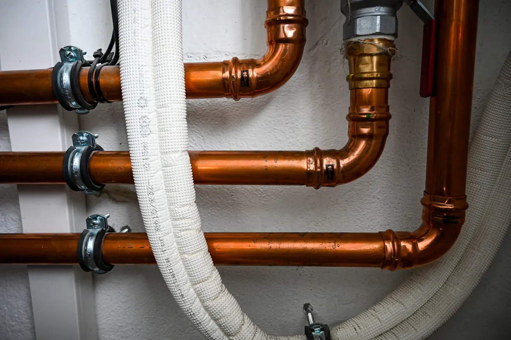

If you have ever compared estimates for a home repipe, a plumbing remodel, or replacing old water lines, you may have been surprised by the large price gap between copper pipe installation and PEX pipe installation. Many homeowners assume the difference is only about materials, but that is only one piece of the puzzle.

The truth is that copper piping costs more because both the material and the labor are significantly higher. PEX is usually much faster to install, which helps reduce labor costs, while copper takes more time, more precision, and more work at nearly every stage of the job. At the same time, copper may offer better long-term durability, while PEX often comes with a lower upfront cost but typically does not last as long.
Understanding the real difference between copper vs PEX plumbing can help you make a better decision for your home, your budget, and your long-term plans.
Copper vs PEX: Why the Installed Price Is So Different
When homeowners ask why copper pipe is more expensive than PEX, the answer usually comes down to two major categories:
- Material cost
- Labor cost
Both matter, but in many plumbing projects, the labor difference is where the price gap really grows.
Copper is more expensive to purchase, and it also takes much longer to install. PEX is more affordable to buy and much easier to run through a home. That combination is why PEX is often the lower-cost option on repipes, remodels, and water line replacements.
Why Copper Pipe Material Costs More
The first cost difference is easy to understand: copper is a premium metal material, and its pricing can fluctuate based on the broader commodities market. That alone can make copper substantially more expensive than PEX.
With copper pipe installation, you are often paying more for:
- The pipe itself
- Fittings and couplings
- Elbows, tees, and adapters
- Soldering materials
- Additional hanging and support components
PEX, by comparison, is made from cross-linked polyethylene, which is generally less expensive than copper. Because PEX comes in flexible lengths, it can also reduce the number of fittings needed on many jobs, which helps keep costs down even further.
So yes, PEX material is cheaper than copper, but that still does not explain the full price gap.
Why Copper Pipe Labor Is Much Longer to Install
This is the part many homeowners do not see. Copper pipe labor is much more time-intensive than PEX labor, and that extra installation time has a direct impact on your final plumbing estimate.
1. Copper Is Rigid and Less Forgiving
Copper pipe does not bend and flex like PEX. Because of that, each section has to be carefully planned and routed.
That usually means the plumber must:
- Measure each section more precisely
- Cut the pipe to exact lengths
- Clean and prep the ends
- Fit each section before joining it
PEX is much more flexible, so long runs can often be installed with fewer interruptions. That flexibility speeds up the entire job.
2. Copper Usually Requires More Fittings
Because copper is rigid, every turn and change in direction often requires a fitting. More fittings mean more labor.
That means more time spent:
- Cutting pipe
- Fitting pieces together
- Aligning runs
- Preparing each connection
- Checking the assembly before final installation
PEX can often bend around corners or through framing spaces with fewer fittings. Fewer fittings usually means fewer connection points and less overall labor.
3. Copper Joints Must Be Cleaned, Fluxed, and Soldered
One of the biggest reasons copper takes longer to install than PEX is the joining process.
A typical copper connection often includes:
- Cutting the pipe
- Reaming or deburring the pipe
- Cleaning the pipe and fitting
- Applying flux
- Assembling the joint
- Heating the joint
- Applying solder
- Letting it cool
- Inspecting the joint for quality
That process must be repeated again and again throughout the plumbing system. It requires time, attention, and a skilled hand.
PEX connections are generally much faster. Depending on the system, the installer may use crimp, clamp, or expansion fittings, all of which can speed up the job considerably compared to traditional copper soldering.
4. Copper Installation Requires More Caution in Finished Homes
If the work is being done in an existing house, copper plumbing installation may take even longer because soldering involves heat and flame.
That means extra care has to be taken around:
- Wood framing
- Insulation
- Drywall
- Stored items
- Tight utility spaces
This often slows down the work because the plumber must carefully protect the surrounding area and work more deliberately. PEX usually avoids that issue because it does not require open-flame soldering during most installations.
5. Copper Is Harder to Run Through Crawlspaces, Walls, and Attics
In real-world plumbing jobs, installers are often working in difficult areas such as:
- Crawlspaces
- Attics
- Wall cavities
- Utility rooms
- Tight mechanical spaces
Copper is simply harder to maneuver in those areas because it is rigid. PEX can snake through tighter spaces more easily, often with less cutting, less opening of walls, and less installation time.
That is another major reason PEX installation labor is lower than copper.
Why PEX Has a Lower Installation Cost
When you compare PEX vs copper plumbing cost, PEX is often more affordable because it saves money in multiple ways at once.
PEX typically lowers installation costs because it:
- Costs less than copper
- Comes in long flexible runs
- Needs fewer fittings in many layouts
- Installs faster
- Does not usually require soldering
- Is easier to route through a home
For a homeowner, that often means a much lower total bill on a whole-house repipe or plumbing replacement project.
Why Copper May Be Better Long Term
Even though copper costs more, many homeowners still choose it because they see it as a long-term investment in their plumbing system.
Copper has been used in homes for decades and is often valued for its:
- Long service history
- Strength and durability
- Solid reputation for longevity
- Premium feel compared to plastic piping systems
In many homes, copper pipe may perform better over the long term, especially when installed properly and used in favorable water conditions. That is one reason some homeowners are willing to pay the higher installation cost upfront.
If you plan to stay in your home for many years, investing more in copper may make sense if your priority is durability and long-term value rather than the lowest possible upfront cost.
Why PEX Has a Lower Upfront Cost but Typically Fails Sooner
PEX is popular for good reason. It is affordable, flexible, and efficient to install. But part of that lower price comes with a tradeoff.
In many cases, PEX typically fails sooner than copper over the long run. While performance can vary based on water quality, installation quality, and product type, PEX is generally not viewed as having the same long-term lifespan as copper.
Reasons PEX may have a shorter lifespan can include:
- Stress on fittings and connection points over time
- Wear related to repeated temperature changes
- Sensitivity to certain water conditions
- Damage from UV exposure before or during installation
- Vulnerability to physical damage or rodents in some environments
That does not mean PEX is a poor option. In fact, it can be a very practical solution for many homes. But if you are comparing long-term plumbing durability, copper is often seen as the stronger choice despite its higher initial price.
Copper vs PEX: Which Pipe Is Better for Your Home?
The best pipe for your home depends on your goals.
Pipe Type
Main Benefit
Main Drawback
Copper Pipe
Better long-term durability and proven lifespan
Higher material and labor cost
PEX Pipe
Lower installation cost and faster installation
Typically, shorter lifespan and earlier failure potential
If your biggest concern is keeping the installation cost lower, PEX is often the better fit.
If your biggest concern is long-term durability and investing in a premium plumbing system, copper may be worth the extra upfront expense.
When Copper Pipe May Be Worth the Higher Cost
Copper may be the better option if:
- You plan to stay in your home long term
- You want a more traditional, proven piping material
- You are comfortable paying more now for possible long-term value
- You prefer a plumbing system with a long-established reputation
For those homeowners, the added cost may be easier to justify because the value is measured over many years.
When PEX Pipe May Be the Better Value
PEX may be the better choice if:
- You want a lower-cost plumbing installation
- You need a faster repipe or remodel
- Your home has difficult routing through walls, crawlspaces, or attic spaces
- Budget is your top priority
- You want a reliable solution with a lower upfront investment
For many households, that lower installed cost is exactly what makes PEX so appealing.
Why Professional Guidance Matters
Every home is different. Water quality, layout, accessibility, budget, and long-term ownership plans all play a role in deciding between copper plumbing and PEX plumbing. The cheapest option is not always the best option, and the most expensive option is not always necessary.
A professional evaluation can help you weigh:
- Upfront installation cost
- Long-term durability
- Repair expectations
- Accessibility of the plumbing system
- Which material makes the most sense for your specific home
That is why it helps to speak with a trusted plumbing professional before making a final decision.
Call Angle Stop Plumbing for Expert Help with Your Home's Plumbing
If you are trying to decide between copper pipe and PEX pipe, the right answer depends on more than just the estimate. You need a plumbing team that can explain the pros and cons clearly, evaluate your home's specific needs, and help you choose the option that fits both your budget and your long-term goals.
Call the experts at Angle Stop Plumbing to sort through the many options when it comes to your home's plumbing. Whether you are considering a repipe, replacing old water lines, or planning a remodel, Angle Stop Plumbing can help you make a smart, informed decision for your home.
Final Thoughts on Copper vs PEX Installation Cost
The big cost difference between copper pipe installation and PEX pipe installation is about much more than the material alone. Copper costs more to buy, but it also takes far longer to install because it is rigid, requires more fittings, and must be carefully cut, cleaned, and soldered. PEX is more flexible, faster to install, and much more affordable upfront.
At the same time, copper may be the better long-term option for homeowners who want durability and are willing to pay more for it. PEX offers a lower install cost, but it typically fails sooner and may not offer the same lifespan as copper.
When you are weighing the pros and cons of copper vs PEX plumbing, making the right choice starts with expert advice and a clear understanding of your home's needs.